Midterm 5 in 5
For my 5 in 5, I decided to explore themes of memory, image, and the politics of reproducibility in archives. My work included a Markov text generation, a TouchDesigner feedback loop sketch, a handwritten journal entry, a suspension of photocopied images, and a passport mini-zine.
1. Markov Text Generation
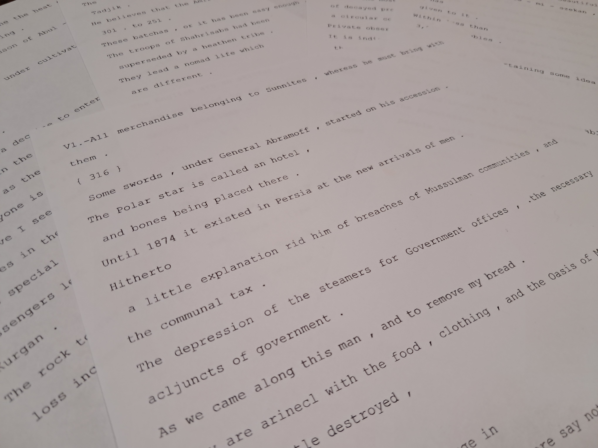
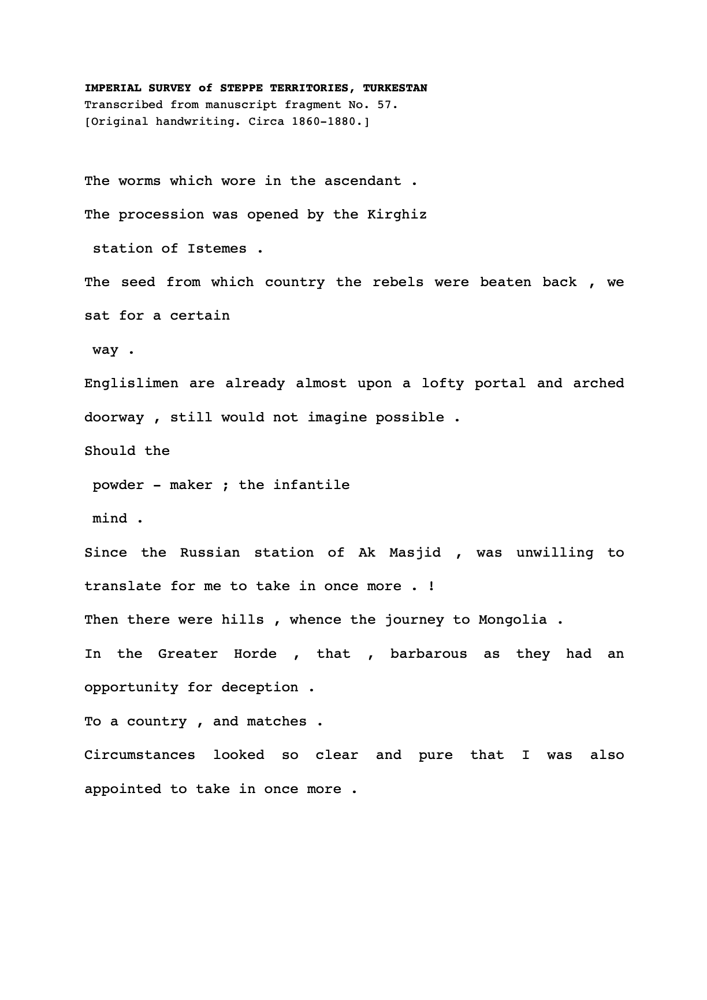
I fed a compiled corpus of 19th century imperial Russian survey texts on Central Asia into a customized Markov chain generator to produce a series of fragmented, "remixed" outputs. The process mirrors the logic of the colonial archive itself... both systems extract, classify, and reassemble language into something that appears coherent but has lost its original context. These original texts were not for the people they were surveying, but to introduce the area to Russia and the West... to justify the Great Game and to flaunt Russian imperial power. The output is often nonsensical but captures the orientalist and imperial tones embedded into the original documents.
2. TouchDesigner Feedback Loop
Using TD's feedback loop system, I layered colonial archive footage and imagery so that each frame superimposes and distorts the previous one, with the word ريشه (resha/root) moving through Persian, Cyrillic, and Latin scripts undergoing the same process. This exercise mimics the forced transit the Tajik language has through administrative and linguistic systems, rendering it with a spectral quality... a palimpsest of culture overwritten.
3. Handwritten Journal Entry
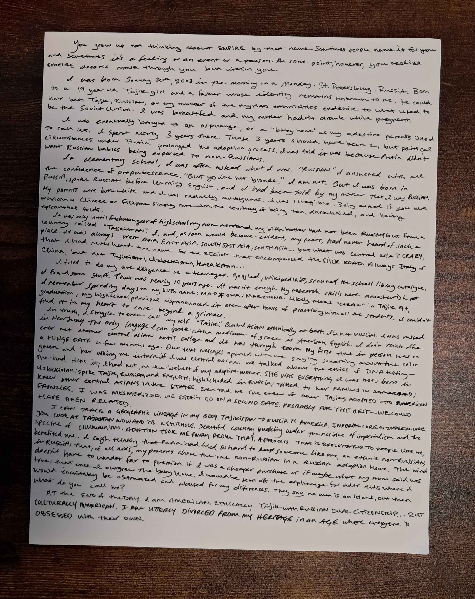
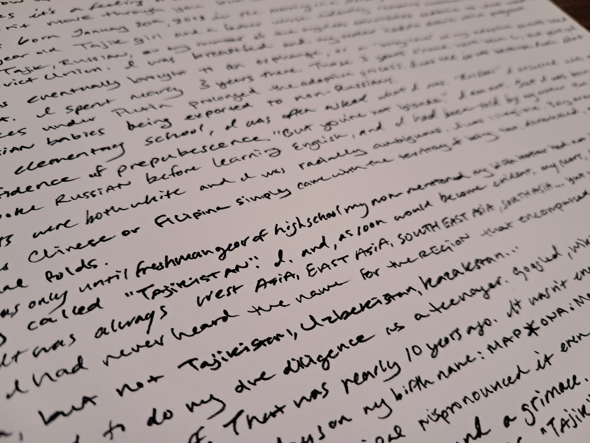
I wrote a single-page autobiographical piece by hand tracing my own passage through the imperial systems I'd been studying: born in St. Petersburg to a Tajik mother, processed through a Russian baby home, adopted into America by a Christian, Middle Class family. Writing it by hand rather than typing it felt essential to the process; while still reproducible, the tactility and idiosyncrasies become more evident. The conclusion reveals it... I/we am/are not separate from this archive, I/we was/were produced by it.
4. Photocopied Image Suspension
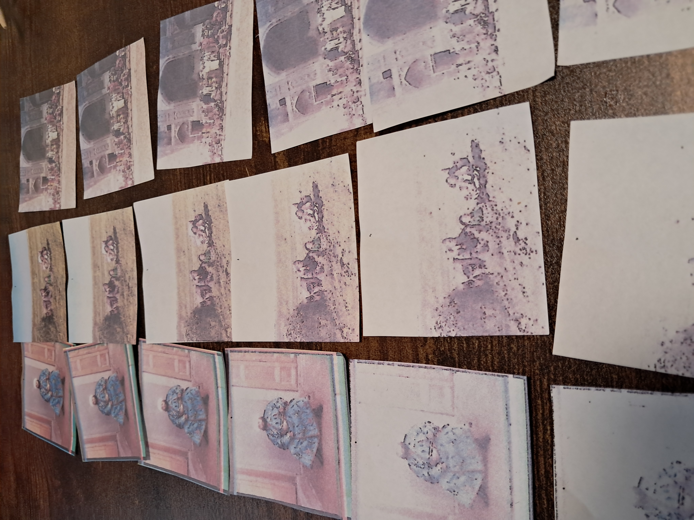
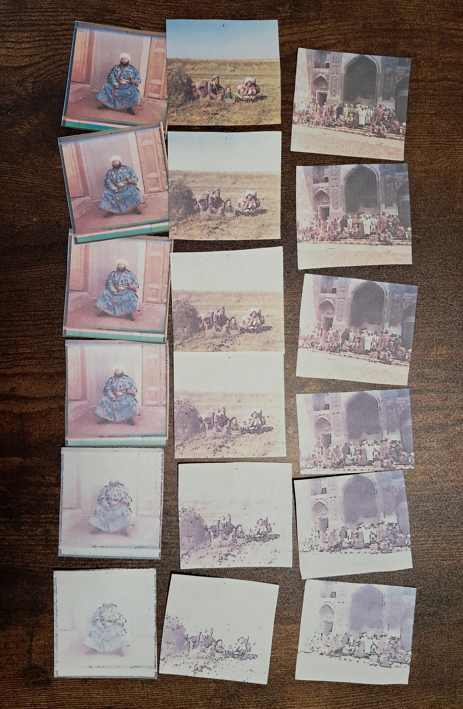
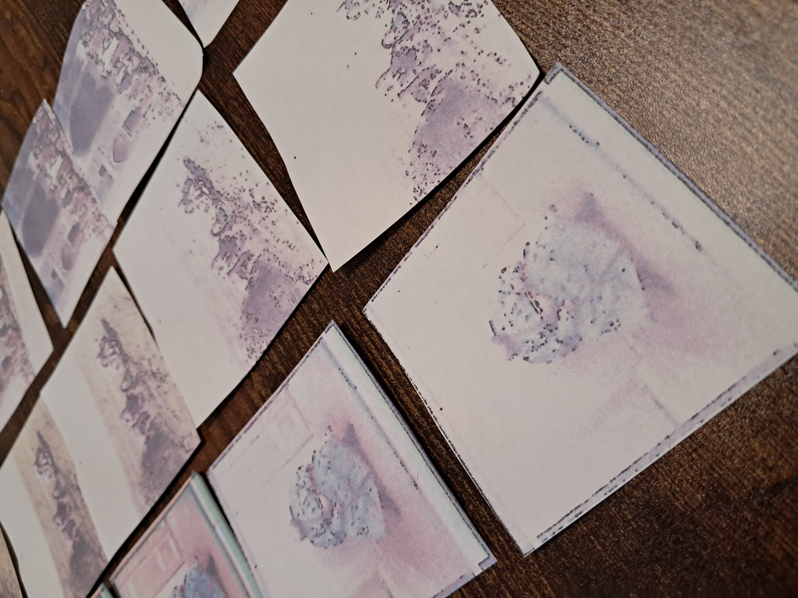
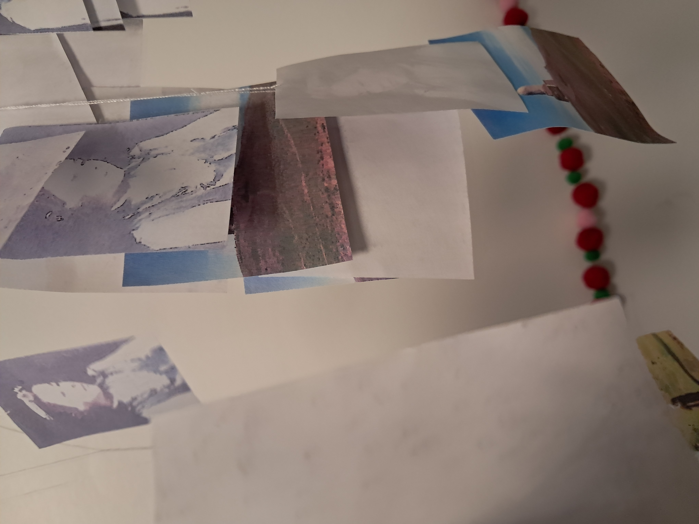
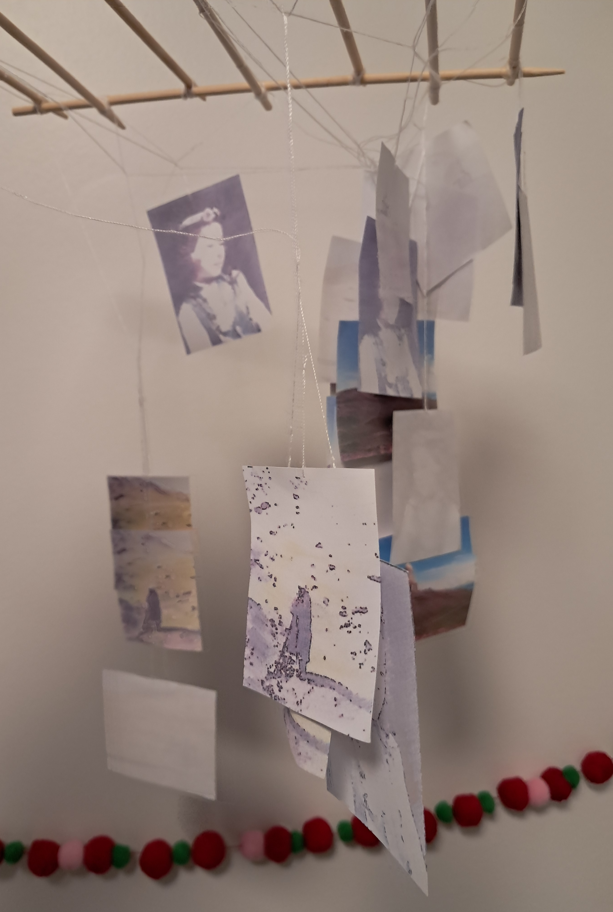
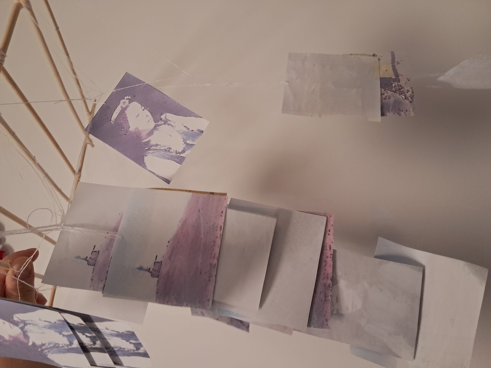
I selected seven imperial survey photographs of Central Asian subjects from the Prokudin-Gorskiĭ album digitized in the Library of Congress and ran each through seven generations of photocopying, feeding each copy back into the machine. The resulting 49 images were cut and some were suspended in layered columns on a makeshift dowel grid, so each subject's progressive erasure is visible in depth. A misalignment accident partway through one sequence propagated forward into all subsequent generations. Loss is the politic of reproducibility in the archive. The question I still have is, was there something "true" to be found in the ghostly final generation?
5. Passport Mini-Zine

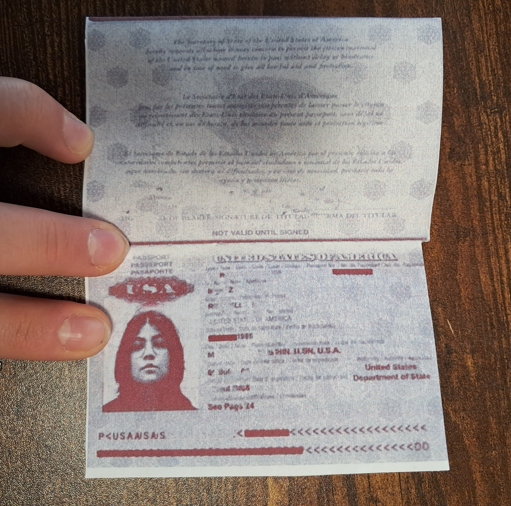

A single-sheet eight-page lo-fi zine designed using the visual language of a US passport, incorporating the governmental seals of Tajikistan, Russia, and the United States. The sequence of those three seals tells the story of passing through administrative bodies. The colors, motifs, and bureaucratic language evoke the aesthetics of state power, but the potential for subversion rests in where this faux-document might be placed and its reality as forgery.
Critique Reflection
Next Steps...